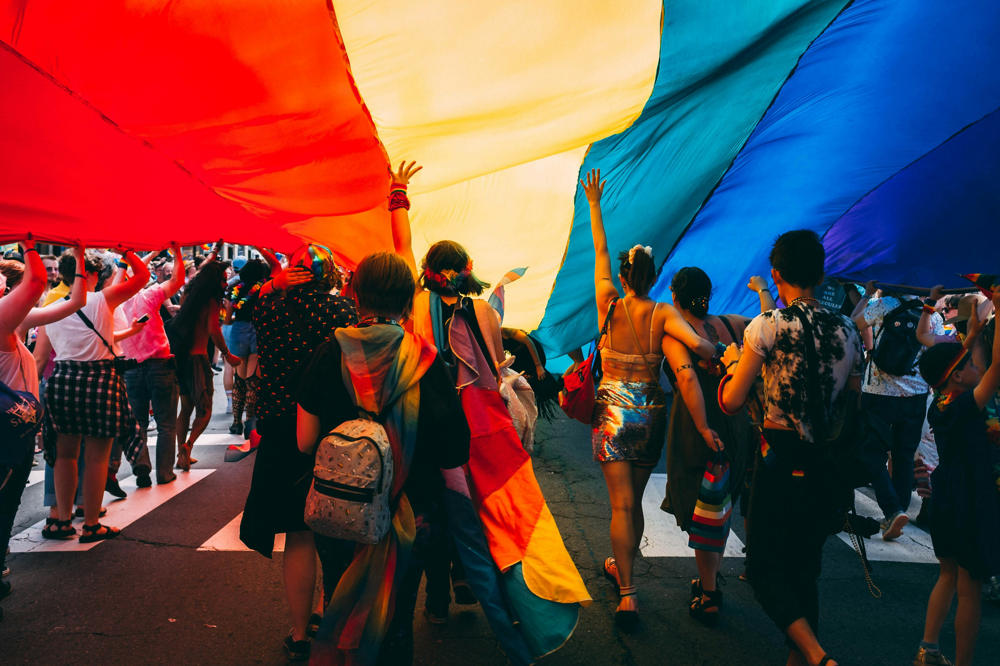
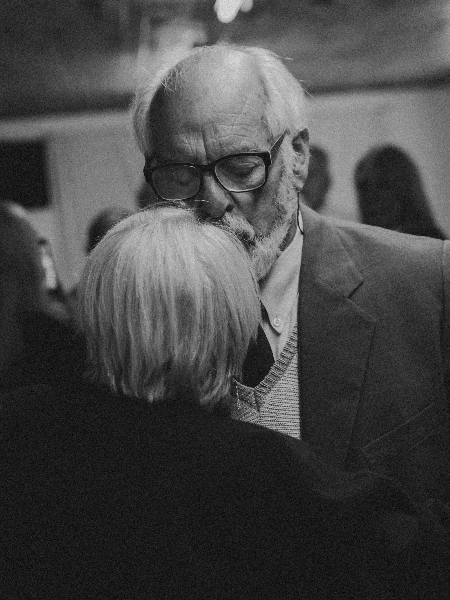
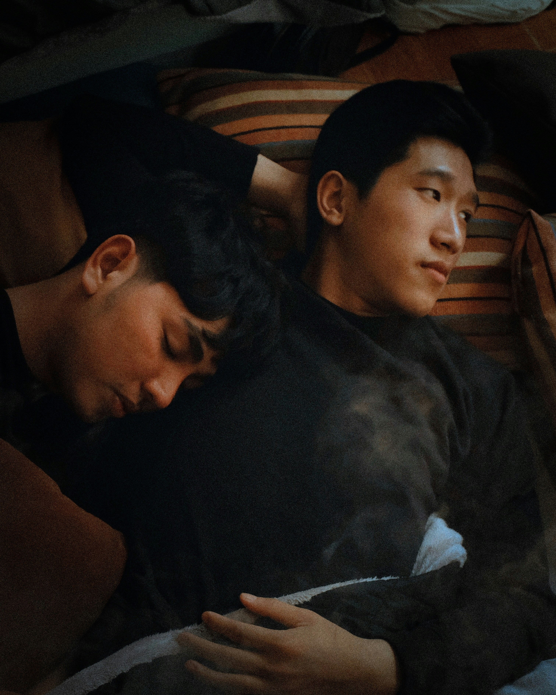
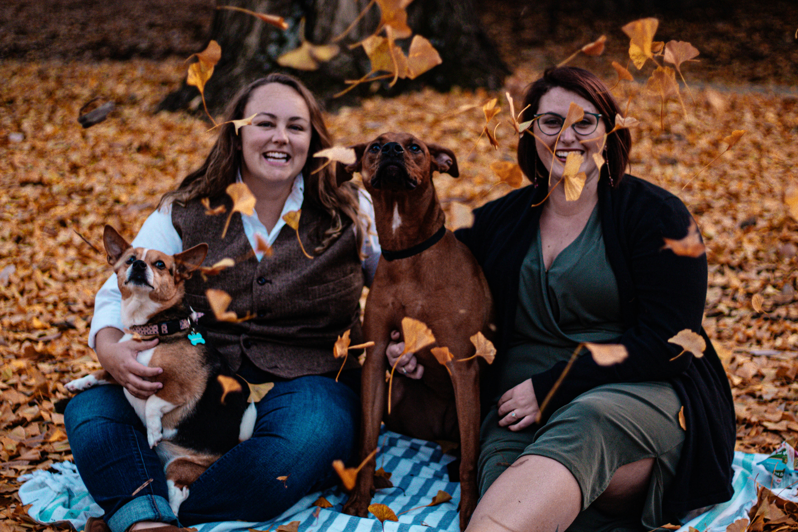
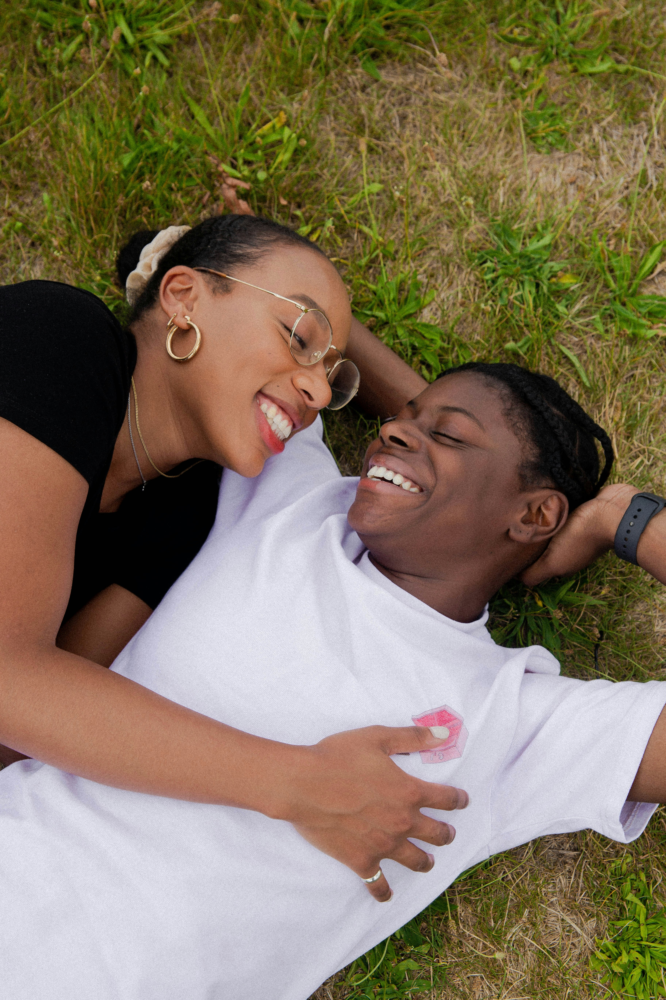
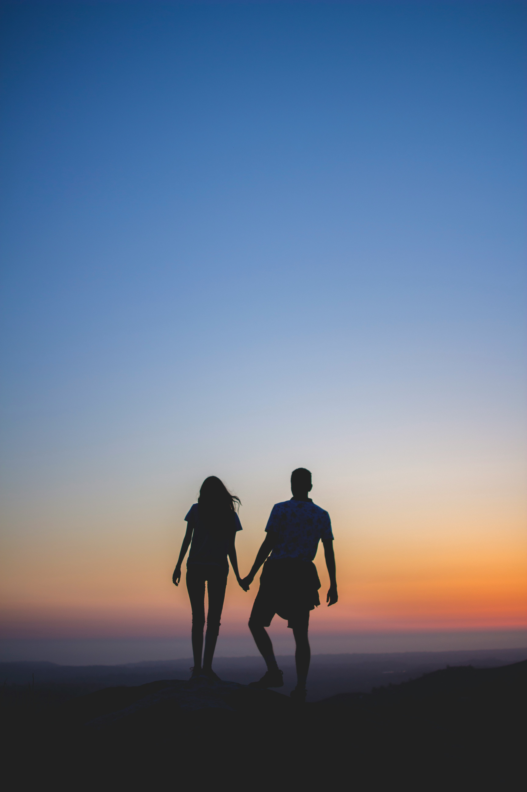

TU ESTILO, TU HISTORIA
Fotografía Exterior y Estudio
Creamos sesiones fotográficas pensadas para representar diferentes estilos, personalidades y momentos especiales.






CREAMOS CONTIGO
Una sesión pensada para ti
Desde una sesión espontánea en exteriores hasta una propuesta más creativa en estudio, buscamos que cada fotografía represente tu estilo y personalidad.
SIGAMOS CREANDO
Descubre más de Estudio Factor
Explora nuestros otros proyectos y conoce diferentes propuestas fotográficas.